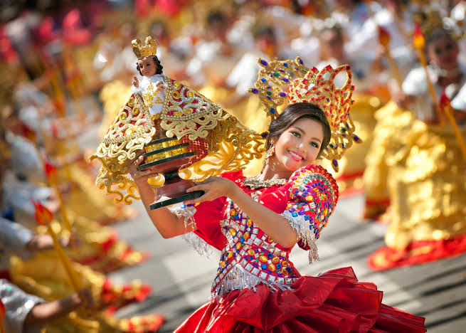
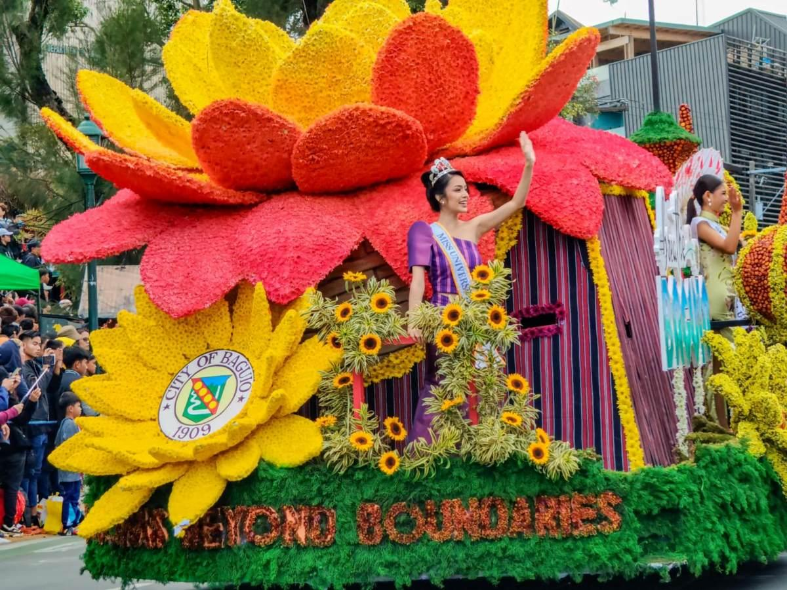
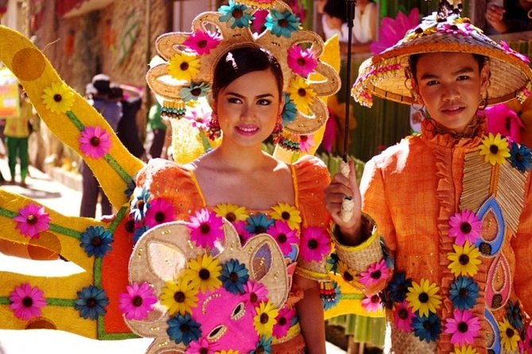

The Sinulog-Santo Niño Festival is one of the grandest and most vibrant cultural and religious celebrations in the Philippines, held annually in Cebu City on the third Sunday of January.

The Panagbenga Festival 2026 marks the 30th "Pearl" anniversary of Baguio City's famous "Baguio Flower Festival". Running from February 1 to March 8, 2026, this year's theme is "Blooming Without End," a tribute to the city's resilience three decades after the 1990 Luzon earthquake.

The Pahiyas Festival is an annual harvest celebration held every May 15 in Lucban, Quezon. It honors San Isidro Labrador, the patron saint of farmers, as a grand thanksgiving for a bountiful harvest.